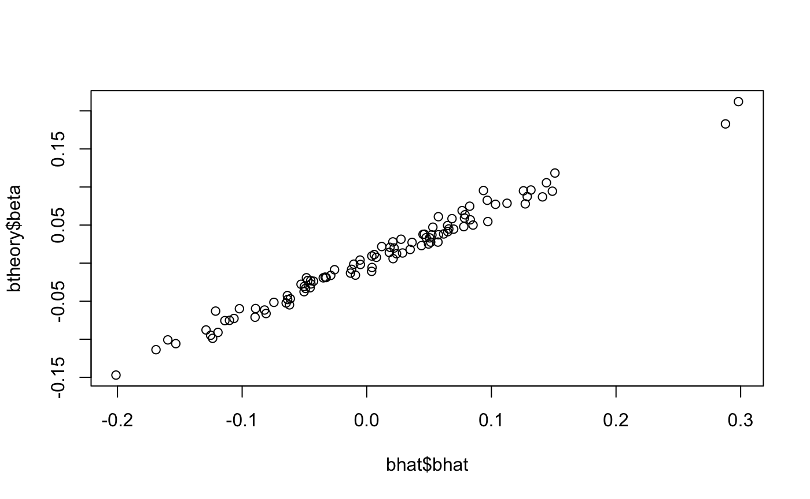
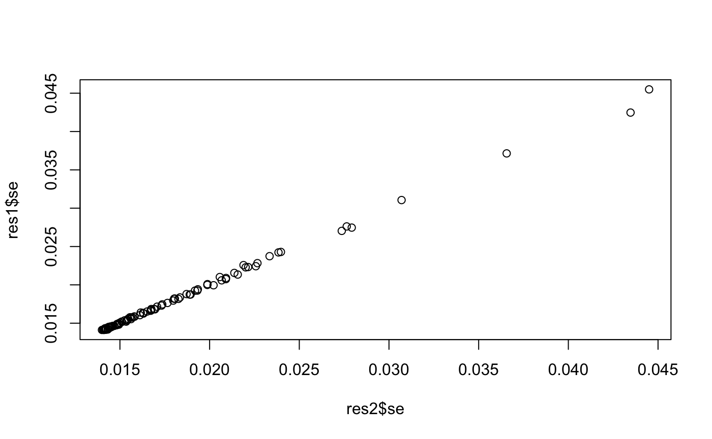

Simulating GWAS summary data
gwas_summary_data.Rmdlibrary(simulateGP)
#> Loading required package: tidyverse
#> ── Attaching packages ────────────────────────────────── tidyverse 1.2.1 ──
#> ✔ ggplot2 3.2.1 ✔ purrr 0.3.3
#> ✔ tibble 2.1.3 ✔ dplyr 0.8.3
#> ✔ tidyr 1.0.0 ✔ stringr 1.4.0
#> ✔ readr 1.3.1 ✔ forcats 0.4.0
#> ── Conflicts ───────────────────────────────────── tidyverse_conflicts() ──
#> ✖ dplyr::filter() masks stats::filter()
#> ✖ dplyr::lag() masks stats::lag()GWAS summary data can be generated in two ways
- Given a set of parameters, generate the genotypes for a set of individuals and the phenotypes that arise from those genotypes. Then obtain linear regression estimates from these simulated individual level data
- Given a set of parameters, simulate the summary level data directly
here we look at (1).
Given the following inputs:
- True causal effects of a set of SNPs
- Minor allele frequency of those SNPs
- Heritability explained by those SNPs
- Sample size in which they are estimated
We would like to obtain:
- Standard error of SNP effect on trait
- Sampled estimate of SNP effect on trait
- P-value of SNP effect estimate for trait
Strategy is to begin by obtaining the expected standard error for the true causal effect for each SNP, and then sampling an estimated SNP effect based on the expected standard error.
Expected standard error
For a linear model
\[ y_i = \beta_0 + \beta_1 x_i + \epsilon_i \]
The coefficient estimates are
\[ \hat{\beta}_1 = cov(x,y) / var(x) \]
and
\[ \hat{\beta}_0 = \bar{y} - \hat{\beta}_1 \bar{x} \]
The standard error of a regression coefficient is:
\[ s_{\hat{\beta}_1} = \sqrt{\frac{\sum{\epsilon_i^2}}{(n-2) \sum{(x_i - \bar{x})^2}}} \]
This can be broken down. The denominator is the sum of squares of X:
\[ \begin{aligned} (x_i - \bar{x})^2 &= (n-1) Var(x) \\ &\approx (n-1) 2p(1-p) \end{aligned} \]
where \(p\) is the allele frequency of the SNP and \(n\) is the sample size. The numerator is the mean squared error, which relates to the variance unexplained in Y:
\[ \begin{aligned} \sum \epsilon_i^2 &= \sum(y_i - \hat{y}_i)^2 / (n-1) \\ &= Var(y) - r^2 Var(y) \\ &\approx Var(y) - \hat{\beta}_1^2 Var(x) \\ &\approx Var(y) - 2 p(1-p) \hat{\beta}_1^2 \end{aligned} \]
Quick check:
Sampling the effect estimate
Given a standard error \(s_{\hat{\beta}_1}\), we can obtain an estimated value for \(\beta_1\) using
\[ \hat{\beta}_1 \sim N(\beta_1, s_{\hat{\beta}_1}) \]
Question: Do I need to update the expected standard error based on the sampled value of \(\hat{\beta}_1\)?
Sampling a set of effect estimates
Suppose we need a set of SNPs to explain some proportion of the variance in a trait.
When specifying the SNP effects there is a simple model that can relate to a SNP to its contribution to heritability
\[ h^2_j = \frac{2p_j(1-p_j)\beta^2_j}{Var(y)} \]
Also
\[ \begin{aligned} h_j^2 &= \frac{Cov(x_j, y)^2}{Var(x_j)Var(y)} \\ &= \frac{\beta_j^2}{Var(y)} \end{aligned} \]
and
\[ h^2 = \sum^M_j h_j^2 \]
If each SNP has MAF of \(p_j\) and effect of \(\beta_j\), then
\[ V_G = \sum^M_j 2p_j(1-p_j)\beta^2_j \]
\[ V_E = \frac{V_G(1 - h^2)}{h^2} \] and
\[ Var(y) = V_G + V_E \]
Once SNP effects have been sampled then they can be scaled to represent a phenotype with variance of 1:
\[ \beta_j^* = \frac{\beta_j}{\sqrt{Var(y)}} \]
Relating SNP effects to allele frequencies can be done by specifying a selection model. Generalise the relationship between the SNP effects, allele frequencies and selection coefficient of the trait:
\[ \beta_j \sim N(0, [2p_j (1-p_j)]^S \sigma^2_\beta) \]
Where S is the parameter describing the selection acting on the trait. Here \(\sigma^2_\beta = V_G / M\) if all SNPs were scaled to have variance of 1 and mean of 0.
\[ \begin{aligned} \sigma^2_\beta &= \sum^M_j (\beta_j-\bar{\beta})^2 \\ &= \sum^M_j \beta_j^2 \end{aligned} \]
when the distribution of SNP effects is centred. This can be adapted to the BayesS model, in which some proportion of SNPs have no effect:
\[ \beta_j \sim N(0, [2p_j (1-p_j)]^S \sigma^2_\beta)\pi + \vartheta (1 - \pi) \]
I think ultimately the presence of \(\sigma^2_\beta\) in this model does not actually mean anything, it scales the SNP effects with respect to the variance of the phenotype. Use the following function to generate SNP effects for a set of SNPs according to specified MAF, heritability and selection model:
generate_gwas_params
#> function (maf, h2, S = 0)
#> {
#> nsnp <- length(maf)
#> if (h2 == 0) {
#> return(dplyr::tibble(beta = 0, maf = maf))
#> }
#> beta <- rnorm(nsnp, mean = 0, sd = sqrt((maf * 2 * (1 - maf))^S))
#> vg <- sum(maf * 2 * (1 - maf) * beta^2)
#> ve <- (vg - h2 * vg)/h2
#> vy <- vg + ve
#> beta <- beta/sqrt(vy)
#> return(dplyr::tibble(beta = beta, maf = maf))
#> }
#> <bytecode: 0x7fc456ac4348>
#> <environment: namespace:simulateGP>Negative selection:
g <- generate_gwas_params(maf=runif(1000, 0.01, 0.5), h2=0.4, S=-2)
plot(g)
Positive selection:
g <- generate_gwas_params(maf=runif(1000, 0.01, 0.5), h2=0.4, S=2)
plot(g)
Neutral model:
g <- generate_gwas_params(maf=runif(1000, 0.01, 0.5), h2=0.4, S=0)
plot(g)
Note that the genetic variance is the heritability
sum(g$beta^2 * 2 * g$maf * (1-g$maf))
#> [1] 0.4Bringing it all together, we can simulate a set of GWAS summary stats by first specifying the true effects we want, and then obtaining sampled effects, standard errors and p-values.
# Simulate 1 million SNPs,
# with 10 large effects,
# a polygenic background of 10000 SNPs,
# and all others with no effects
param <- rbind(
generate_gwas_params(maf=runif(10, 0.4, 0.5), h2=0.1, S=0),
generate_gwas_params(maf=runif(10000, 0.01, 0.5), h2=0.3, S=0),
generate_gwas_params(maf=runif(1000000-10-10000, 0.01, 0.5), h2=0, S=0)
)
# Generate GWAS summary stats
res <- generate_gwas_ss(param$beta, param$maf, 450000)Compare to individual level data results to summary data simulations
set.seed(100)
h2 <- 0.1
nid <- 10000
param <- generate_gwas_params(maf=runif(100, 0.01, 0.5), h2=h2, S=0)
res1 <- generate_gwas_ss(param$beta, param$maf, nid)
g <- lapply(param$maf, function(x) rbinom(nid, 2, x)) %>%
bind_cols %>%
as.matrix
score <- g %*% param$beta
err <- rnorm(nid, mean=0, sd=sqrt(var(score) * (1-h2) / h2))
y <- score + err
res2 <- gwas(y, g)
plot(res2$bhat ~ res1$bhat)plot(res2$se, res1$se)
TODO: simulate effect estimates for SNPs given LD matrix